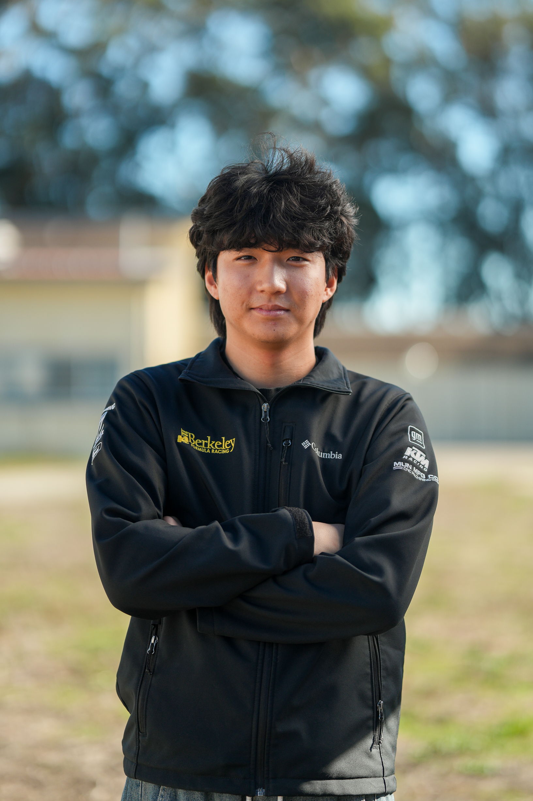

I work at the intersection of CFD, physical validation, and applied machine learning — currently developing the B27 rear wing and the team's simulation infrastructure. Longer term, I'm drawn to the aerodynamics of things that go very fast, whether that's a race car or something considerably less street-legal.
Outside of BFR: modifying my G70, chasing new music across genres and decades, and building odd little software projects because it's fun.
